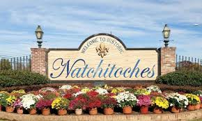

At the heart of this National Historic District lies Front Street, a brick thoroughfare where wrought iron balconies, restaurants and shops face the beautiful Cane River Lake.
There are guided tours available through the National Landmark Historic District. Fort St.
Jean Baptiste, a replica of the 1732 French colonial fort is open Wednesday - Sunday with an interpretation of how the French marines lived in colonial days.
The historic district hosts several art galleries, a museum and more.
Chances are, the thing you’ll love most about Natchitoches (aside from the famous meat pies) is the charming 33-block Landmark district-a shopper’s paradise and a bed & breakfast lover’s dream.
Natchitoches is the Bed & Breakfast Capital of Louisiana with over 35+ inns offering 125+ rooms that range from rustic to elegant town homes, many within walking distance of the historic district.
Natchitoches hosts nine nationally recognized motel chains with 800+ rooms plus two locally owned inns.
Natchitoches, well known for the filming of Steel Magnolias, is also known as the “City of Lights”.
The world-famous Natchitoches Christmas Festival is always held on the first Saturday in December. Events throughout the year fill out the festival calendar for a great time any time of year.

The Cane River National Heritage Area Trail includes plantations open daily along the Cane River Road including Melrose, Magnolia, the complex at Magnolia Plantation referred to as the Cane River Creole National Historical Park, and the newest National Park located at Oakland Plantation.
Westward along the El Camino Real, lie three State historic sites; Los Adaes, Fort Jesup and Rebel State Park which includes the Louisiana Country Music Museum.
The Natchitoches Events Center, opened in 2005, is a 39,000-square-foot event center in the National Historic District within walking distance of shops, restaurants, attractions and accommodations.
The recently opened Louisiana Sports Hall of Fame and Northwest Louisiana History Museum sits proudly at the edge of Front Street, honoring more than 300 legendary Louisiana athletes, coaches and other sports figures, such as Shaquille O’Neal, Anna Koll, and Tommy Hodson among others in its latest class of inductees.
Other sports-themed exhibits and interactive media trace the history and importance of sports to life in Louisiana.
Come visit the oldest permanent settlement in the entire Louisiana Purchase Territory and discover why the National Trust for Historic Preservation named Natchitoches as one of the Dozen Distinctive Destinations and gave it a Great American Main Street Award®.